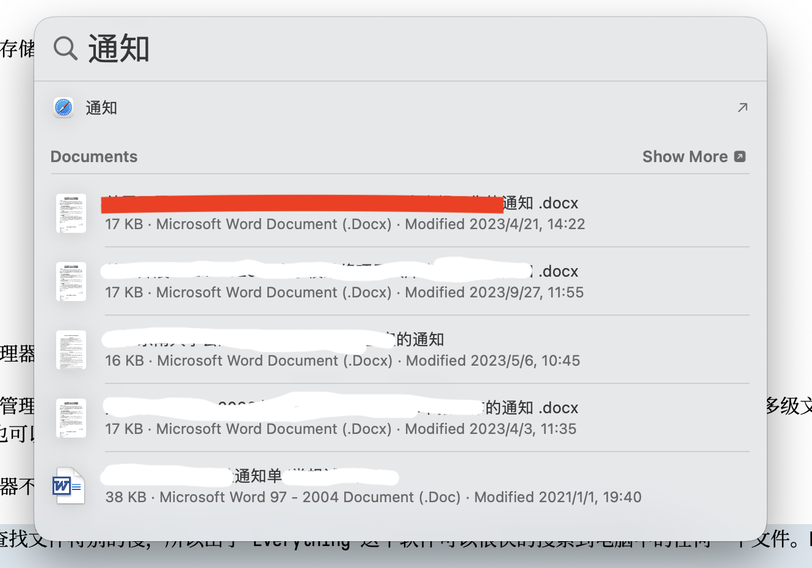
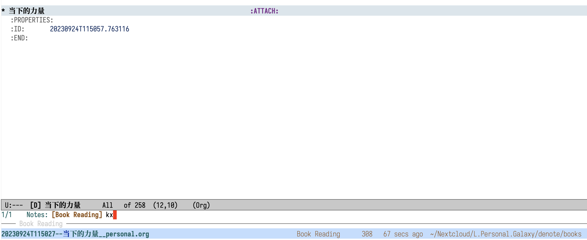
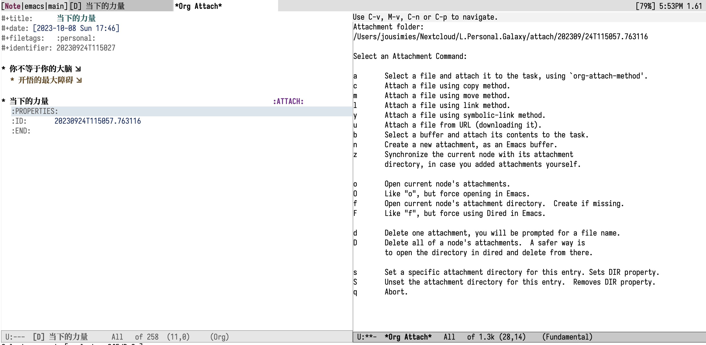
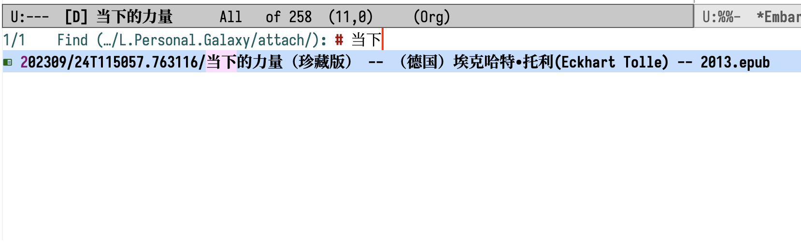
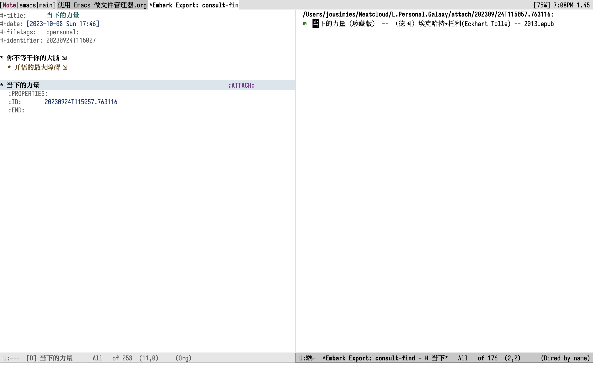

使用 Emacs 做文件管理器
Table of Contents
1. 文件管理
首先需要搞明白什么是文件管理。
文件管理是指对计算机上的文件和文件夹进行组织、存储、查找和维护的过程。
文件管理涉及到的内容有：
- 创建文件和文件夹
- 文件及文件夹的重命名和删除
- 复制和移动文件
- 查找文件
- 文件属性和权限
- 文件的备份及恢复
- 文件清理及维护
本文所述的文件管理，指的是个人笔记或知识管理相关的文件，不包含电影等类型的短期消费文件。
2. 传统的文件管理器-Explorer 和 Finder
对于上述的文件管理列出的七点内容，传统的文件管理器均能较好的工作。对于文件管理没有更高的要求，是完全可以继续使用的。有更高要求的可以探索更多的软件，如 Total Commander，Emacs 中的 dired 包等。
对于文件和文件夹创建、重命名和删除，传统的文件管理器仅对于特殊情况下的工作不够理想。比如需要批量的生成文件夹，或者生成嵌套的多级文件夹。这个时候使用脚本（Bash 脚本、Python 程序）可以更好、更快的完成。使用 Excel 结合批处理也可以实现。
早先时期（Win11 之前），Windows 自带的文件管理器不能使用 Tab 管理，复制和移动文件时需要打开多个窗口进行，略显得有些不便。这个问题在 Finder 中是一样的，需要在多个文件夹中跳转，不过 Finder 有 Tab，不需要开太多的窗口以致迷人眼。
查找文件方面，原来 Windows 自带的搜索很难用，查找文件特别的慢。好在 Windows 平台出了 Everything 这款软件，它可以很快的搜索到电脑中的任何一个文件。MacOS 上有 spotlight 会缓存电脑中的文件也可以较方便的检索文件，只是相比 everything 没那么好用。
以下使用 Finder 作为示例。比如查找系统中关于通知的文件，Spotlight 仅给出了一部份内容，需要点更多来展示更多的搜索结果。如果使用 Finder 查找，会给出更多结果，但是结果中可能存在无关的文件。

Figure 1: 20231008170741screenshot
文件的备份及恢复、文件属性和权限这里不多述。备份和恢复可以使用云盘或者移动硬盘进行，当然可以结合其他的备份软件以自动进行。
文件清理及维护，个人认为当前硬盘价格较低，硬盘空间不足的情况较少出现，没有必要为了节省空间删除文件。
3. 高效文件管理的思考
传统的文件管理器可以较好的工作，为啥还要探索其他的可能呢？有以下几点需要考虑：
- 文件的管理是基于他的作用来决定的，如读书需要上下文进行关联理解，文件管理同样要和与该文件相关的笔记、日志、工作内容相关联。传统的文件管理器在这方面是很薄弱的。
- 传统的嵌套式文件夹管理方式己经很难满足要求，如同一个文件在不同的项目中是存一份还是存多份？存在哪一个文件夹中？嵌套的文件夹深达四、五层，时间久了之后怎么想的起来在哪里？
- 文件管理应与个人的笔记管理相结合，怎么从笔记找文件或者从文件跳转到相应的笔记呢？
- 文件的查找应该局限于需要查找的内容相关的文件，不应扩大也不应查找不到。Everything 这个软件会查到硬盘中所有的文件，当然可以限于某个文件夹中，但是鼠标点点的方式不够高效。Spotlight 找出来的内容不完全，Finder 找出来的内容过多。
4. 基于 Emacs 的文件管理实践
以下展示我使用 Emacs 管理笔记及对应的文件的方法。首先 Emacs 中有一个强大的包 Dired，它相当于 Explorer 或 Finder，与 Total Commander 一样强大。
4.1. 文件及所处的文件夹
比如当前我正在写作的这个文件（ORG 文档），它一定是存在于某个文件夹当中的。对于 Word 等这类软件要打开当前编辑的文件所在的文件夹，需要打开文件管理器，一层一层的找下去，如果文件层级较深还可能找错。在 Emacs 中仅需要一个组合按键 C-x C-j。
在 Emacs 中可以很方便的找到当前文件所处的文件夹，如下图所展示。从图中右侧可以看出当前文件所在的文件夹处于较深的层级，因此仅靠大脑记住所有文件所在的文件夹位置是不靠谱的。

Figure 2: Dired 文件管理器
4.2. 文件附件管理
文件管理并不一定是纯文本文件，可能是 Word、Excel、PPT 等富文本文件，对于这些富文本文件，Emacs 是不能编辑的，那么如何管理这些文件呢？我使用 org-attach 进行。如前所述，一个文件一定与相应的笔记相关联。
以我阅读《当下的力量》这本书为例。我阅读一本书就会在我的笔记系统中创建一则笔记，一般以书的名字为笔记名，在 Emacs 中使用 Consult-notes 可以很方便的找到我的所有阅读相关的笔记，如下图所示，简单过滤（我使用的三码郑码，kx = 当，也可以通过拼音过滤）之后就可以查找到这则笔记。

Figure 3: Screenshot:当下的力量
图中上方为笔记内容的预览，从预览内容可以看到当前文件有一个条目叫“当下的力量”，这个是我刚添加的这本书的 EPUB 文件。使用 Org 管理笔记，可以通过 org-attach 给一个条目添加附件。具体的做法为，按 C-c C-a 打开下图的界面，在这个界面中通过 m（移动） 将文件添加到该条目下，会自动添加 ATTACH 这一 Tag 和自动生成 PROPERTIES 属性内容，其中 ID 是全局唯一的（基于时间生成，以后看到 ID 内容即可看到该文件是何时被添加的）。

Figure 4: Screenshot:org-attach
当然以上仅用于举例，管理书籍可以使用 Calibre 进行，一个被颜值耽误的强大软件。对于书籍以外的文件可以通过本文的方式进行。
4.3. 笔记与文件的查找和反查
一个文件与笔记相关联之后，查找文件可以先查找到与之相关的笔记，也可以找到该文件之后反向查找与之相关的笔记。
查找笔记使用 consult-notes 进行，找到笔记之后，去到相应的条目上使用 C-c C-a f 打开附件所在的文件夹。
怎么实现和 everything 类似的文件检索呢？可以通过 consult-find 进行，org-attach 所在的文件夹均处于 org-attach-directory。C-u M-x consult-find 跳转到指定的文件夹中查找文件名含有的指定内容的文件，比如下图，attach 文件夹中所有的文件名合有“当下”的文件。

Figure 5: screenshot:consult-find
在上述图片中，调用 embark-act 可以将检索的结果导出到进行二次的过滤。如下图所示，图中右侧的 Embark Export Buffer 即为上图中通过 consult-find 查找到的结果，在该条目上调用 my/org-attach-visit-headline-from-dired 即可从该文件跳转到对应的笔记文件中，如下图左侧所示。

Figure 6: screenshot:embark-collect
4.4. 补充说明
- my/org-attach-visit-headline-from-dired 该函数目前仅能跳转到一个条目上，如果有多个条目具有相同的 ID 目前还不能准确跳转，需要改进该函数。
- 本文中笔记与文件的查找和反查仅做示例。Embark Export 的内容仅有一条因此没有过滤的要求，但是如果检出的结果很多，比如100条，这个时候进行二次过滤就很有必要。为什么检索的时候不进行限制？这个也是可以的。